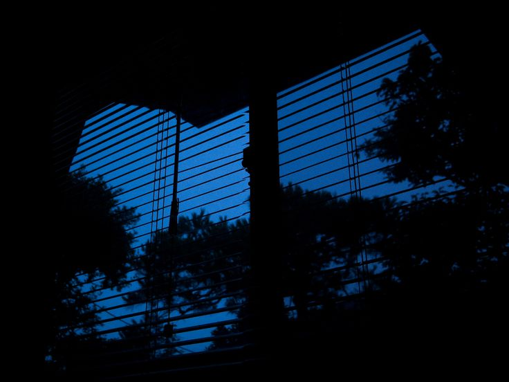

For when the world won’t understand, the page always will.
history.
As I said earlier, I would be fulfilling my desire through typing out my creations instead of writing them down.
My works entail daunting, delicate, and descriptive depictions of girlhood and what it feels like to be a female of
the same age—someone at the height of what I like to call "pubescence juvenescence" and the peak of irresponsible,
brash youth.
I identify myself as a pessimist.
I believe things are bound to go wrong, as if they already aren't. We live to crash
and burn. We act only to fail. We are simply incorrect. It is excruciating to stand idly by and pretend as if
everything was fine. And so, with each passing day of holding in, my urge to burst out rises. This website is my
eruption, my detonation of everything I held back.
Over the years, I have also accumulated my fair share of insecurities. No surprises there! You need to possess a
sufficient amount of self-doubt in order to embody the value of "humility", though I seem to have contained more than
what is required. I do not have a proper medium to expel this to, thus the creation of this website.
I aspire to make a safe space; a sanctuary for troubled individuals. Where problems as small as your self-confidence
isn't shunned nor made fun of, we embrace every petty little problem for everyone punished.
etymology:
The title of the website “Words Uninterrupted” references the phrase found in the introduction: “I am a girl, always
interrupted.” This means that all the content found in said website are essentially all the words the I struggle to
express, hence it has been condensed into mere scriptures.
